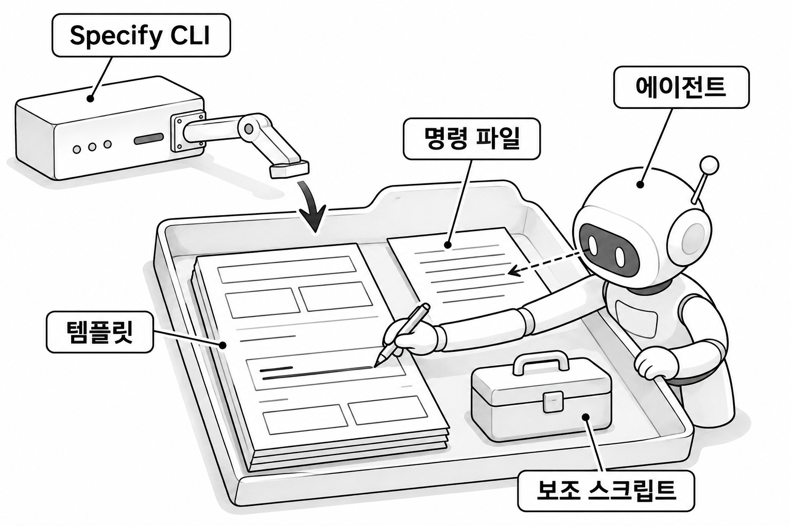

4장. Spec Kit이란?
1. Spec Kit의 개념
1.1 Spec Kit의 정의
Spec Kit은 GitHub이 공개한 오픈소스 도구입니다. 3장에서 배운 SDD 절차를 코딩 에이전트 안에서 명령으로 실행하게 해 줍니다. 라이선스는 MIT라서 회사 프로젝트에도 자유롭게 쓸 수 있습니다.
3장에서 SDD는 스펙 · 계획 · 작업 목록을 차례로 확정한 다음 구현하는 방식이라고 했습니다. 이 절차를 사람이 매번 직접 지시하면 문서 목차가 그때그때 달라집니다. 순서를 건너뛰는 일도 생깁니다. Spec Kit은 문서 양식과 작업 순서를 파일로 고정해서 에이전트가 늘 같은 방식으로 일하게 합니다.
1.2 Spec Kit에 AI 모델이 없다는 뜻
Spec Kit을 처음 보면 새로운 AI나 새로운 에디터로 오해하기 쉽습니다. 하지만 Spec Kit에는 AI 모델이 들어 있지 않습니다. 스펙의 문장을 쓰고 코드를 만드는 일은 지금 쓰고 있는 에이전트가 합니다. 이 책에서는 Claude Code입니다.
그래서 결과물의 품질은 Spec Kit보다 두 가지에 달려 있습니다. 하나는 어떤 에이전트를 쓰는지이고, 다른 하나는 사람이 결과를 얼마나 꼼꼼히 검토하는지입니다. Spec Kit을 설치했다고 에이전트가 더 똑똑해지지는 않습니다. 에이전트가 정해진 양식과 순서를 벗어나지 않게 될 뿐입니다.
| 오해 | 실제 |
|---|---|
| Spec Kit은 새로운 AI다 | AI 모델이 없다. 글과 코드는 에이전트가 쓴다 |
| Spec Kit은 새 에디터나 앱이다 | 프로젝트 폴더에 들어가는 파일 묶음이다 |
| Spec Kit을 쓰면 결과가 저절로 좋아진다 | 품질은 에이전트와 검토하는 사람이 정한다 |
2. Spec Kit을 이루는 세 가지
Spec Kit이 프로젝트에 넣어 주는 것은 템플릿 · 명령 파일 · 보조 스크립트입니다. 이 세 가지를 프로젝트에 설치하는 프로그램은 따로 있습니다. 4절에서 다룰 Specify CLI입니다.

그림 4-1처럼 세 가지는 모두 프로젝트 폴더 안의 파일입니다. 이 파일들을 읽고 실제로 일하는 것은 에이전트입니다. 파일이 어느 폴더에 생기는지는 5장에서 직접 설치하면서 확인합니다.
2.1 템플릿
템플릿(template)은 스펙 · 계획 · 작업 목록을 어떤 목차로 쓸지 정해 둔 마크다운 파일입니다. 빈칸이 있는 서식 종이에 해당합니다. 예를 들어 스펙 템플릿에는 사용자 시나리오, 요구사항, 성공 기준을 적을 자리가 미리 마련되어 있습니다.
템플릿이 있으면 기능이 몇 개가 되든 문서의 구조가 같아집니다. 검토하는 사람은 어느 스펙을 열든 같은 자리에서 같은 정보를 찾습니다. 2장에서 본 "추측으로 채우기"도 줄어듭니다. 템플릿에 빈칸이 있으면 에이전트가 그 항목을 건너뛰지 않고 채우거나, 모르는 부분이라고 표시하기 때문입니다.
2.2 명령 파일
명령 파일은 에이전트에게 어떤 순서로 무엇을 하라고 지시하는 프롬프트를 담은 파일입니다. 명령 파일도 마크다운 파일입니다. 스펙을 만드는 명령 파일에는 "어떤 스크립트를 실행하고, 어떤 템플릿을 열어, 무엇을 채우고, 무엇은 쓰지 말라"는 지시가 적혀 있습니다.
명령 파일은 SDD 단계마다 하나씩 있습니다. constitution · specify · clarify · plan · tasks · analyze · implement 같은 단계 이름이 명령 이름이 됩니다. 사용자가 대화창에 /speckit-specify를 입력하면 Claude Code가 그 이름의 명령 파일을 찾아 읽습니다.
명령 파일은 평범한 텍스트입니다. 그래서 열어 보면 에이전트가 무슨 지시를 받는지 그대로 읽을 수 있습니다. 12장에서 커뮤니티 확장을 설치하기 전에 명령 파일부터 읽어 보는 것도 이 성질 덕분입니다.
2.3 보조 스크립트
보조 스크립트는 사람이나 에이전트가 매번 손으로 하기 번거로운 반복 작업을 처리하는 작은 프로그램입니다. 기능마다 폴더를 만들고 001, 002처럼 번호를 매기는 일이 대표적입니다. 현재 작업 중인 기능 폴더의 경로를 찾아 알려 주는 일도 스크립트가 맡습니다.
이런 일을 에이전트에게 매번 말로 시키면 번호가 겹치거나 폴더 이름 규칙이 어긋날 수 있습니다. 정해진 규칙이 있는 일은 AI의 판단에 맡기지 않고 스크립트로 처리하는 편이 안전합니다. 보조 스크립트는 bash용과 PowerShell용이 따로 있습니다. 이 책은 Windows를 쓰므로 5장에서 PowerShell용을 고릅니다.
3. 명령 하나를 입력하면 일어나는 일
3.1 에이전트와 사람의 역할 나누기
대화창에 다음 명령을 입력했다고 합시다. 명령 이름 뒤에는 만들고 싶은 기능을 적되, 사용할 기술은 적지 않습니다.
코드 조각
/speckit-specify 블로그 글에 댓글을 달 수 있게 한다이 한 줄을 입력하면 아래 표의 순서로 일이 진행됩니다.
| 순서 | 일어나는 일 | 하는 쪽 |
|---|---|---|
| 1 | speckit-specify 명령 파일에 적힌 지시를 읽는다 | 에이전트 |
| 2 | 지시에 따라 보조 스크립트를 실행해 번호가 붙은 기능 폴더를 만든다 | 에이전트가 스크립트를 실행 |
| 3 | 스펙 템플릿을 열고 사용자가 준 설명으로 빈칸을 채워 spec.md를 만든다 | 에이전트 |
| 4 | 생성된 spec.md를 읽고 빠지거나 틀린 곳을 고친다 | 사람 |
1~3번은 에이전트가 하고, Spec Kit의 파일은 재료와 지시서 역할만 합니다. 2번에서 스크립트를 실행하거나 3번에서 파일을 만들 때는 1장에서 배운 권한 승인 화면이 뜰 수 있습니다. 이때 대상과 내용을 보고 승인하는 것도 사람의 몫입니다.
4번은 Spec Kit이 대신해 주지 않는 단계입니다. 에이전트는 템플릿의 빈칸을 그럴듯한 내용으로 채울 수 있습니다. 그 내용이 우리 프로젝트에 맞는지는 사람이 판단해야 합니다. 7장부터 9장까지 단계마다 "생성된 문서 읽기"와 "검토하기"가 따로 있는 것도 이 때문입니다.
3.2 여러 에이전트에서 쓸 수 있는 이유
Spec Kit은 Claude Code 말고도 GitHub Copilot, Codex, Gemini CLI, Cursor 같은 여러 에이전트에서 쓸 수 있습니다. 템플릿 · 명령 파일 · 보조 스크립트가 모두 특정 에이전트에 묶이지 않는 평범한 파일이기 때문입니다. 마크다운 지시문을 읽고 터미널 명령을 실행할 수 있는 에이전트라면 같은 절차를 따를 수 있습니다.
에이전트마다 다른 점은 명령 파일을 찾는 위치와 명령을 부르는 표기 정도입니다. Specify CLI는 설치할 때 어떤 에이전트용인지 지정받아 그 에이전트가 읽는 폴더에 명령 파일을 넣습니다. 이 책은 Claude Code용으로 설치하며, 구체적인 옵션과 표기는 5장에서 다룹니다.
이 구조 덕분에 팀원마다 다른 에이전트를 쓰더라도 같은 템플릿으로 문서를 만들 수 있습니다. 반대로 같은 명령을 입력해도 에이전트가 다르면 문서의 문장과 코드는 달라질 수 있습니다. 1.2에서 말했듯이 글을 쓰는 것은 에이전트이기 때문입니다.
4. Specify CLI와 Python · uv
4.1 Specify CLI의 역할
Specify CLI는 템플릿 · 명령 파일 · 보조 스크립트를 프로젝트에 설치하는 명령줄 프로그램입니다. CLI(Command Line Interface)는 마우스 대신 터미널에 명령을 입력해서 쓰는 프로그램이라는 뜻입니다. 터미널에서 specify로 시작하는 명령을 입력하면 Specify CLI가 실행됩니다.
Specify CLI를 쓰는 때는 정해져 있습니다. 프로젝트에 Spec Kit을 처음 넣을 때와 나중에 새 버전으로 업그레이드할 때입니다. 스펙을 쓰고 계획을 세우고 구현하는 동안에는 Specify CLI를 쓰지 않습니다. 이 단계들은 모두 에이전트의 대화창에서 /speckit-으로 시작하는 명령으로 진행합니다.
| 도구 | 입력하는 곳 | 쓰는 때 |
|---|---|---|
Specify CLI (specify ...) | 터미널 | 설치와 업그레이드 |
Spec Kit 명령 (/speckit-...) | 에이전트 대화창 | 스펙 · 계획 · 작업 목록 작성과 구현 |
4.2 Python과 uv가 필요한 이유
Specify CLI는 Python으로 만든 프로그램입니다. 그래서 실행하려면 컴퓨터에 Python 3.11 이상이 있어야 합니다.
uv는 Python 프로그램을 설치하고 관리하는 도구입니다. Java 개발자에게 익숙한 말로 하면, 필요한 라이브러리를 받아 오고 실행 환경을 준비해 주는 Gradle과 비슷한 역할입니다. uv로 Specify CLI를 설치하면 uv가 Specify CLI 전용 환경을 따로 만들어 줍니다. 그래서 컴퓨터에 있는 다른 Python 프로그램과 라이브러리 버전이 섞이지 않습니다. 또 설치할 때 버전을 지정해서 팀원 모두가 같은 버전의 Specify CLI를 쓰게 할 수 있습니다.
Python과 uv의 설치 방법, 그리고 버전을 고정하는 구체적인 명령은 5장에서 PowerShell로 직접 실행합니다.
4.3 우리 프로젝트의 언어와는 관계없다
Python이 필요하다고 해서 Python 코드를 쓰는 것은 아닙니다. Python은 Specify CLI라는 설치 프로그램을 돌리는 데만 쓰입니다. 우리 블로그 API는 지금처럼 Java와 Spring Boot로 작성합니다.
| 구분 | 언어 | 역할 |
|---|---|---|
| Specify CLI | Python | 템플릿 · 명령 파일 · 보조 스크립트를 설치하고 업그레이드한다 |
| 헌법 · 스펙 · 계획 · 작업 목록 | 마크다운 | 사람과 에이전트가 함께 읽는 문서 |
| 블로그 API 코드 | Java (Spring Boot) | 에이전트가 계획에 적힌 기술로 작성한다 |
어떤 언어와 프레임워크로 구현할지는 Spec Kit이 정하지 않습니다. 8장의 plan 단계에서 우리가 에이전트에게 알려 주는 기술이 기준이 됩니다. 마찬가지로 JDK 21은 블로그 API를 빌드하고 테스트하는 데 필요할 뿐 Spec Kit과는 관계가 없습니다.
5. Spec Kit의 역사와 버전
Spec Kit은 Den Delimarsky와 John Lam이 구상했습니다. 첫 커밋은 2025년 8월 21일에 Den Delimarsky가 올렸고, GitHub은 같은 해 9월 2일 이 도구를 공개했습니다. Den Delimarsky는 Microsoft에서 개발자 도구를 맡았던 개발자로, 2026년 1월 Anthropic으로 자리를 옮겼습니다 [확인 필요]. 같은 달부터는 GitHub의 Manfred Riem이 리드 메인테이너를 맡고 있습니다 [확인 필요]. 리드 메인테이너는 프로젝트의 변경을 받아들일지 정하는 책임자입니다.
첫 커밋 1주년인 2026년 8월 21일에 1.0.0이 나왔습니다 [확인 필요]. 그 뒤로도 릴리스가 매우 자주 나오고 있습니다. 이 책은 2026년 11월 9일에 나온 v1.3.3을 기준으로 씁니다 [확인 필요]. 바로 다음 날 v1.4.0이 나왔지만 [확인 필요], 이 책의 실습은 v1.3.3으로 고정합니다. 아래 표의 날짜와 인물 정보는 출간 전에 GitHub 저장소의 releases 페이지와 커밋 기록으로 다시 확인합니다.
| 시점 | 일 |
|---|---|
| 2025년 8월 21일 | 첫 커밋 |
| 2025년 9월 2일 | GitHub이 공개 |
| 2026년 1월 | Manfred Riem이 리드 메인테이너를 맡음 |
| 2026년 8월 21일 | 1.0.0 출시 |
| 2026년 11월 9일 | v1.3.3 출시 (이 책의 기준) |
| 2026년 11월 10일 | v1.4.0 출시 |
릴리스가 이렇게 자주 나오면 버전에 따라 설치 경로나 옵션 이름이 달라질 수 있습니다. 인터넷에서 찾은 자료의 명령이 이 책과 다르다면, 먼저 그 자료가 어느 버전을 기준으로 썼는지 확인하십시오. 버전을 고정해서 설치하는 방법은 5장에서, 고정한 버전을 안전하게 올리는 방법은 12장에서 다룹니다.